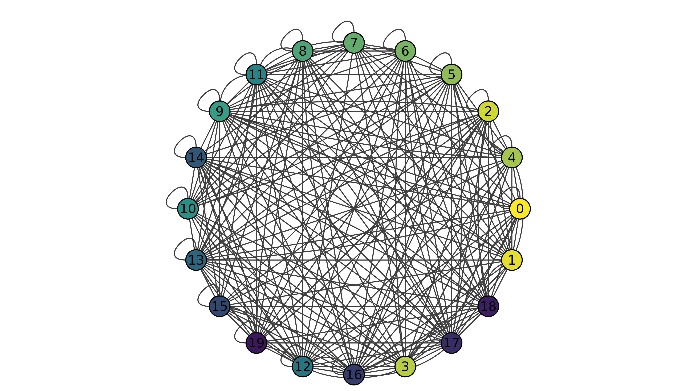

PySeldonlib Documentation#
Welcome to the PySeldonlib Documentation. PySeldonlib is a Python Package for Opinion Dynamics Simulation, an extension of the Seldon Framework. It provides:
tools for simulation of various Opinion Dynamics Models like the classical DeGroot Model, Deffuant Model, Activity Driven Model, etc.
tools to create, manipulate and study complex networks which are either randomly generated or provided by the user.
a clean and robust interface for conducting the simulations.
Opinion Dynamics#
Opinion dynamics is a field of study within the realm of complex systems and sociophysics that explores how opinions, beliefs, and attitudes evolve and spread within social networks. It combines elements of physics, social science, and mathematics to understand the mechanisms driving opinion formation and change under various influences, such as personal convictions, peer pressure, media impact, and societal norms. Our work contributes to this interdisciplinary field by providing robust tools for simulation and analysis, aiding in the understanding of complex opinion dynamics phenomena Seldon-Code.
DeGroot Model Example#
The DeGroot model is a model of social influence. It describes how agents in a network can reach a consensus by updating their opinions based on the opinions of their neighbors. The DeGroot model is a simple model of social influence that has been studied extensively in the literature. It is used to model a wide range of social phenomena, such as the spread of information, the formation of opinions, and the emergence of social norms.
And here is the example of reaching consensus in a network using the DeGroot model. We will create a network of 20 agents with random opinions and random connections between them. We will then conduct the simulation.
Initial opinions of the agents in the network in the range of [0,1] are shown below:
{kind=link}
Final opinions of the agents in the network after the simulation are shown below:

And we can conclude that the agents have reached a consensus after the simulation.
Reference:#
Morris H. Degroot. Reaching a consensus. Journal of the American Statistical Association, 69(345):118–121, 1974. URL: https://www.tandfonline.com/doi/abs/10.1080/01621459.1974.10480137, arXiv:https://www.tandfonline.com/doi/pdf/10.1080/01621459.1974.10480137, doi:10.1080/01621459.1974.10480137.